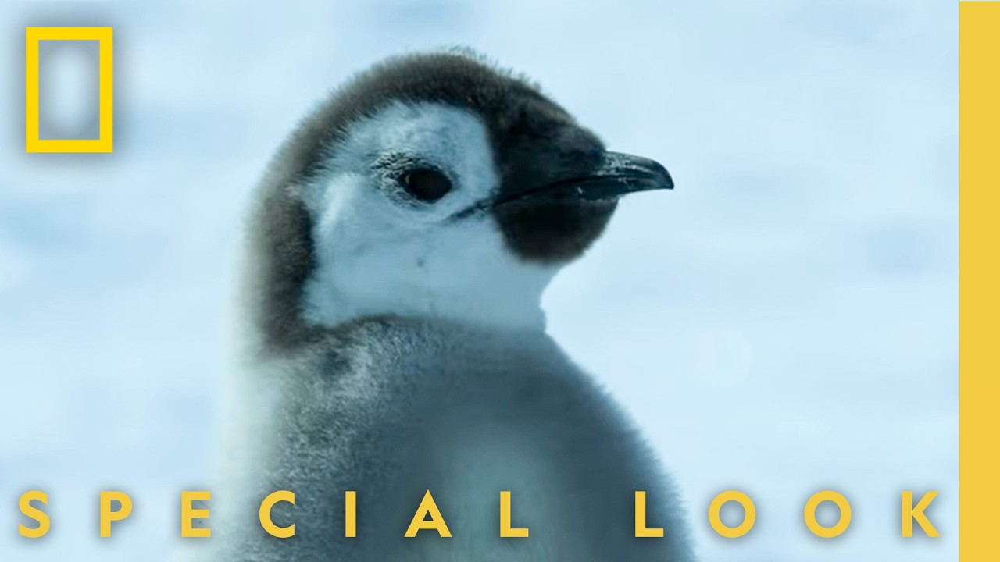

【企鹅的第一次游泳 | 企鹅的秘密 | 国家地理】
Summary: The penguin chicks undergo a critical transformation, shedding their fluffy coats for waterproof feathers, but face life-threatening challenges due to melting ice caused by climate change.
摘要： 小企鹅们经历了一次关键的蜕变，褪去绒毛换上防水羽毛，但由于气候变化导致冰层融化，它们面临着生命威胁。

⏱️ Estimated Reading Time: 2 min
📚 六级生词 📚 雅思生词 📚 托福生词 📚 GRE生词 📚 视频里的生词
The chicks really are growing up fast.
小企鹅们确实成长得很快。
They've started this amazing transformation where they molt.
它们开始了蜕皮的奇妙转变。
You know, that gray fluffy coat is amazing for keeping warm on the ice, but it's completely useless in the water.
你知道，那层灰色的蓬松绒毛在冰上保暖效果极佳，但在水中却毫无用处。
They need to lose it and get their adult feathers ready for their first swim.
它们需要褪去绒毛，换上成年羽毛，为第一次游泳做好准备。
They're following the oldest and most confident of the group.
它们跟随着群体中最年长、最自信的企鹅。
An internal compass takes their brave leader north.
一种内在的罗盘指引着它们勇敢的领队向北前进。
But they've run into trouble.
但它们遇到了麻烦。
As our climate warms, the sea ice is breaking apart earlier, melting beneath them before they're ready.
随着气候变暖，海冰提前破裂，在它们准备好之前就在脚下融化。
If their baby feathers get too wet, they can drag the chicks underwater and drown them.
如果它们的幼羽过于潮湿，可能会将小企鹅拖入水中淹死。
This is really difficult to watch.
这一幕真的令人不忍目睹。
They are fighting for their lives.
它们正在为生存而战。
Go on.
继续前进。
The only world the leader's ever known is crumbling beneath her.
领队唯一熟悉的世界正在她脚下崩塌。
Waiting for the tiny chick is becoming dangerous.
等待那只小企鹅变得越来越危险。
He's struggling to keep up.
它正努力跟上队伍。
With the ice melting rapidly, they're all at risk.
随着冰层迅速融化，它们都处于危险之中。
The leader does something no emperor chick should ever have to do.
领队做了一件没有帝企鹅幼崽应该做的事。
Leave their friend behind.
抛下它们的同伴。
The others make it onto stable ice.
其他企鹅成功到达了稳固的冰面。
The little chick isn't finished yet.
那只小企鹅还没有放弃。
His friends are in sight.
它的朋友们就在眼前。
Together again.
它们再次团聚了。
Just when I think these penguins have hit their limit, they do something extraordinary.
就在我以为这些企鹅已经达到极限时，它们做出了非凡的举动。